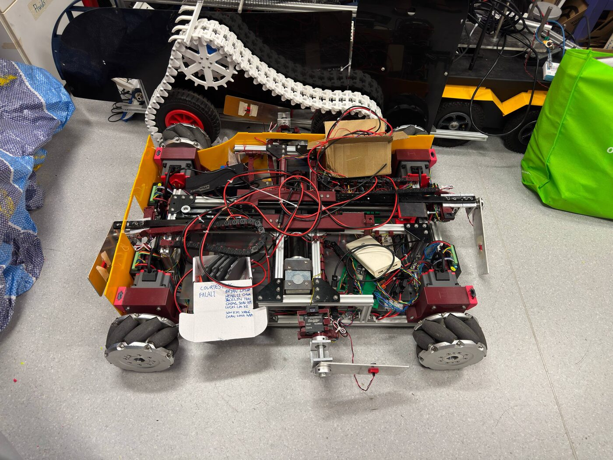
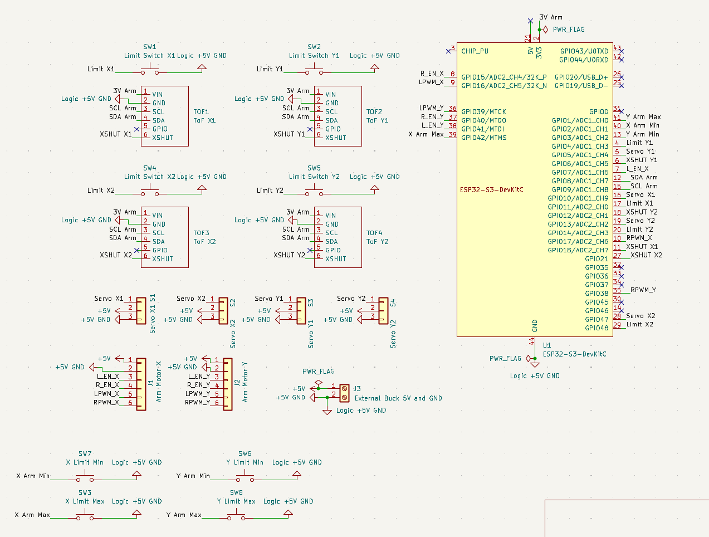

Autonomous Material-Flow Robot
30.007 EDI · 2026Embedded control · PCB design · electromechanical integration
A low-profile autonomous mobile robot designed to move non-standard cage trolleys in a textile manufacturing environment. The system docks under the trolley, extends its arms, clamps the load and releases it safely.
- My subsystem: designed the arm-subsystem PCB from schematic and netlist through layout and fabrication outputs.
- Built ESP32-S3 / PlatformIO firmware in C++ around Axis, Arm, Flipper and Motor modules: ToF sensing, servo motion, BTS7960 motor control, hard-stops and a clamp/release state machine.
- Worked with a PCA9685 PWM driver, four VL53L0X ToF sensors, limit switches and independent X/Y arm axes; verified the pinout against the KiCad netlist.
- Designed against measurable requirements including ≤200 mm height, ≥300 N clamping force, ≥100 kg load and ≤1 minute docking.
The project folder also contains arm, wheel-drive and sensor prototypes, fabrication files, and demo videos. Photos shown are from the actual project workspace.